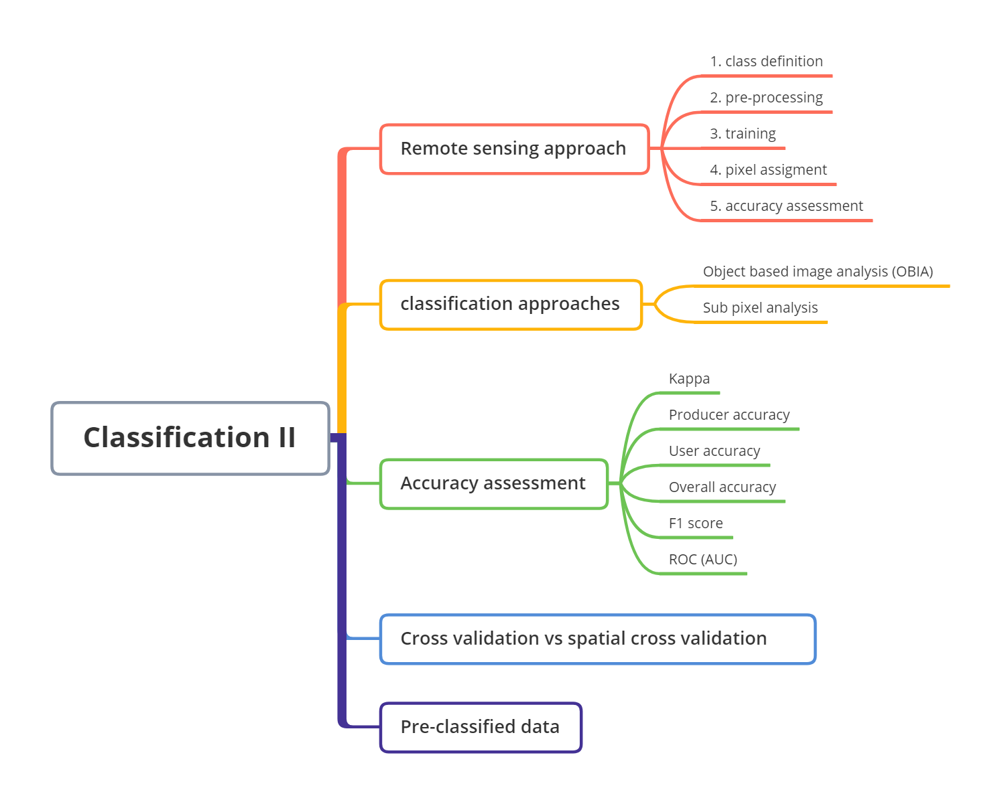
7 Week7 Classification II
7.1 Summary
7.1.1 Mind map
7.1.2 Classification Approaches
7.1.2.1 Object based image analysis
In classification, a pixel can’t represent an object, and an object normally is made up of many pixels. There are many methods in object based image analysis. Superpixels consider the similarity of pixels and homogeneity of the pixels, and Simple Linear Iterative Clustering (SLIC) is one of most common method to generate superpixels. For example, the centroid of objects moves iteratively, and the images become more object-based images.

Bears in right picture are objected based, and similar pixels are clustered as superpixels.

Other algorithms
- multi-resolution segmentation in eCognition Definiens Developer
7.1.2.2 Sub pixel analysis
It was also called Spectral Mixture Analysis, Linear spectral unmixing. It proivdes the details in every single pixel, and it estimates the fractions that made up of this pixel. For example, it shows how many percent of urban area, and how many percent of vegetation, and how many percent of water.

In terms of how it works, the linear sum of endmembers weighted by associated endmember fraction represents the reflectance in each bands. For example, water is 13 in Band 3, and this is a endmember. Then, the percentage of different objects can be calculated based on endmembers.
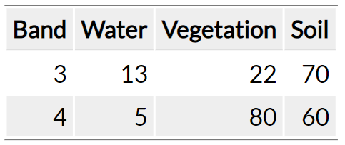
7.1.3 Accuracy assessment
The evaluation is essential part in the classification, and different evaluation methods may give us different performances of our classification. The terms in remote sensing are different in machine learning, and we need to balance the accuracy between producer accuracy and user accuracy because it’ hard to get the best in both of them.
Producer, user and overall accuracy
| Remote Sensing | Machine Learning | |
|---|---|---|
| Producer accuracy (PA) | TP/TP+FN | Recall |
| User accuracy (UA) | TP/TP+FP | Precision |
| Overall accuracy (OA) | TP+TN/TP+FP+FN+TN | Overall accuracy |
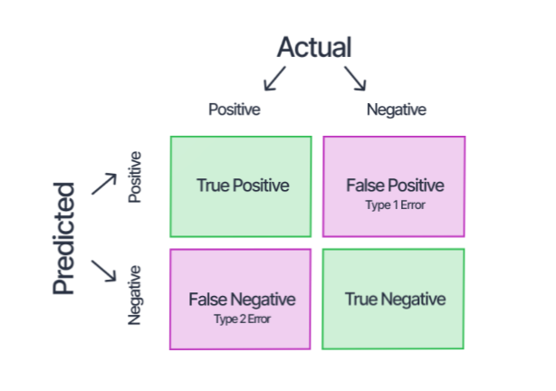
Errors
provide performance of our classification. The following matrix shows error matrix in remote sensing.
Error of omission = 100 - PA
Open land = 42/180 = 24%
Open land producer = 138/180= 76%
Error of commission = 100 - UA
Open land = 68/206 = 33%
Open land user = 138/206= 67%
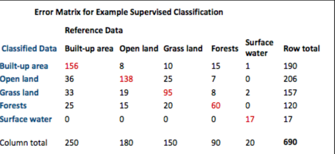
Kappa
express the accuracy of an image compared to the results by chance. However, it has two limitations, one is hard to define a good value, and the other is Kappa values have different levels of accuracy.
F1 score
combines producer accuracy and user accuracy, range from 0 to 1, and 1 is the best performance. It also has two limitations, it doesn’t consider the true negative, and it considers user accuracy and producer are equally important.
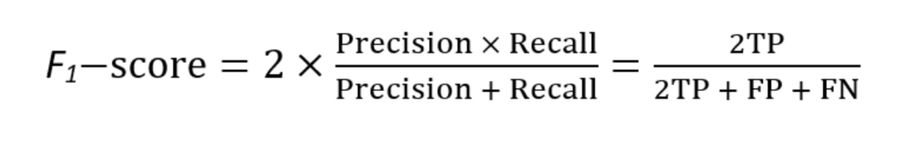
Receiver Operating Characteristic Curve (ROC Curve)
is a graph showing the performance of classifier at all classification thresholds.
AUC (area under the ROC Curve) stands for all area under the entire ROC Curve.
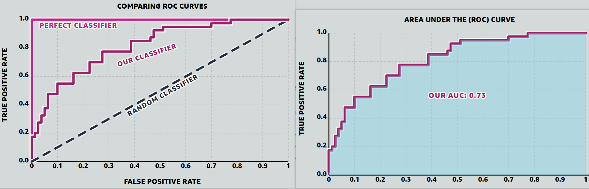
7.1.4 Test and train data
Cross-validation
a resampling method that uses different portions of the data to test and train a classifier on different iterations. The accuracy is the average of all classifers.

Spatial cross validation
is the cross validation that consider spatial dependence. Spatial autocorrelation are happens between training and testing data. Spatial cross validation spatially partitioning the folded data, and stops training and testing data being near each other. For example, if there are two seprate forest in the image, and the training data are from the first forest, and the testing data are from second forest.
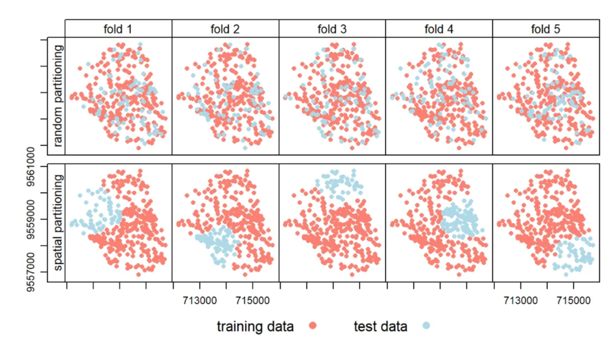
7.1.5 Applications of classification approaches on GEE
The approaches including subpixel, superpixel, and object-based have been introduced in the previous part, and here I used GEE to do a classification for Tianjian, China on GEE. The key steps were summarized in the following workflow.
My code link is https://code.earthengine.google.com/4eaa3862a6f9c091e16da1f2c8b82ff2
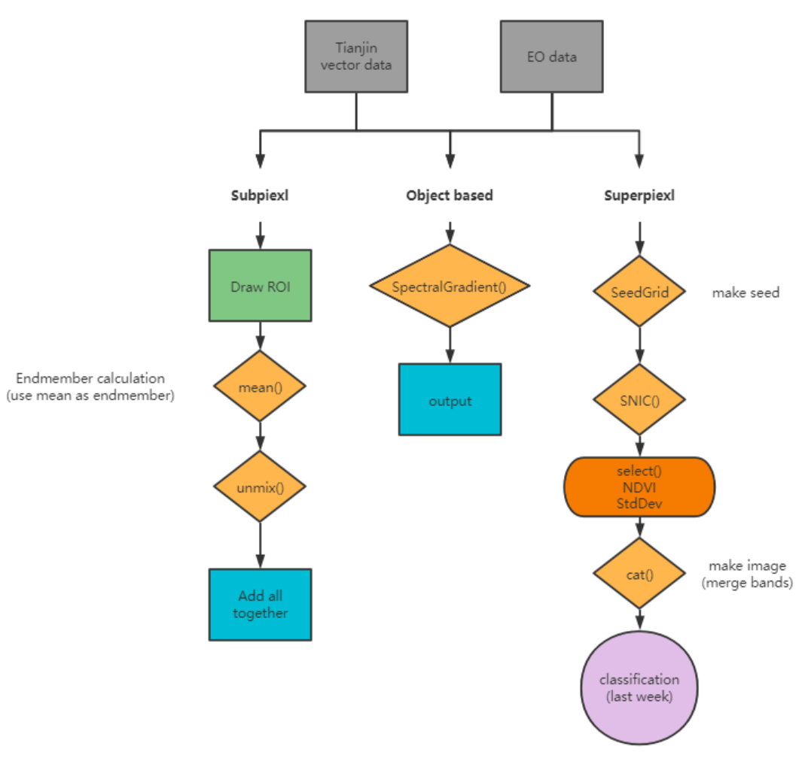
The following pictures are my results. In the super pixel, the pixels were clustered as a bigger pixel. The differences among small pixels were ignored, and they become a bigger pixel. In object-based, if there are more higher resolution data, the results will be more better than current one.
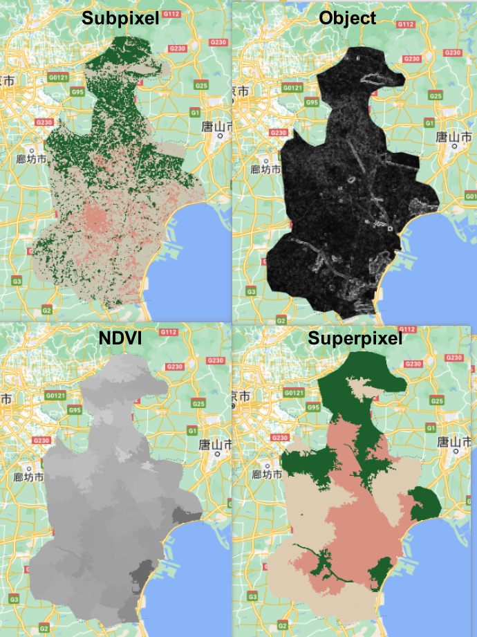
In subpixel, the classified results are based on the percent of each pixel. If the pixel is greater than 0.5, then give this pixel a value, like 1 refers to high_urban.
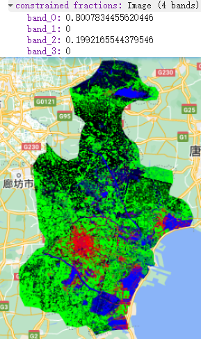
7.1.6 Useful pre-classified data resource
Many pre-classified data we can use in our future analysis, and the Dynamic World also combine deep learning approaches in their classification.
GlobeLand30 - 30m for 2000, 2010 and 2020: http://www.globallandcover.com/home_en.html?type=data
European Space Agency’s (ESA) Climate Change Initiative (CCI) annual global land cover (300 m) (1992-2015): https://climate.esa.int/en/projects/land-cover/data/
Dynamic World - near real time 10m: https://www.dynamicworld.app/explore/
Google building data: https://sites.research.google/open-buildings/
Source: Andrew 2023
7.2 Application
There are many classification approaches in land use and land cover(LULC) classification. Object-based and subpixel were mentioned in course content. Also, many accuracy assessment metrics were introduced. This application tries to explore how classification approaches were applied in research, and how to justify the accuracy assessment metrics in our future analysis.
7.2.1 Case1: Pixel- vs. Object-based classification using Landsat data on GEE
Like we explored in last week application, the resolutions of data and classification algorithms (RF, CART, SVM, etc.) have effects on the performance of classification. The selection of classification approaches is also important, and this paper provides some explorations about object-based approach. Tassi et al. (2021a) conducted this case study in Maiella National Park, Italy, and compared four different approaches based on Random Forest.
| PB | Pixel-based |
| PBT | Pixel-based including the image textural information |
| OB | Object-Based, using BDC |
| OBP | Object-Based, using the L8 15-m panchromatic band and the BDC |
PBT approach has texture features than PB approach, and texture features are extracted using GLCM that we explored in week5. OBP approach has the 15-m L8 pan band, which was generated by the L8 30 meter RGB bands using ‘rgbToHsv’ and ‘hsvToRgb’. Both OB approach and OBP approach applied SNIC to cluster pixels in GEE. The evaluation metrics were including OA, PA, UA, and F-score. Tassi et al. (2021b) found OB approach has no accuracy improvement than PB approach, but the OBP approach has significantly improved the accuracy than OB approach. Therefore, when we use OB approach in the classification, we can consider add a new 15-meter panchromatic band in order to improve the accuracy. In addition, I think this paper doesn’t have enough discussion about why adding a new band will improve accuracy. In my opinion, the better classification of object-based approach still relies on the better resolution bands because the new 15 meters band has higher spatial resolution than the 30 meters bands in Landsat 8.
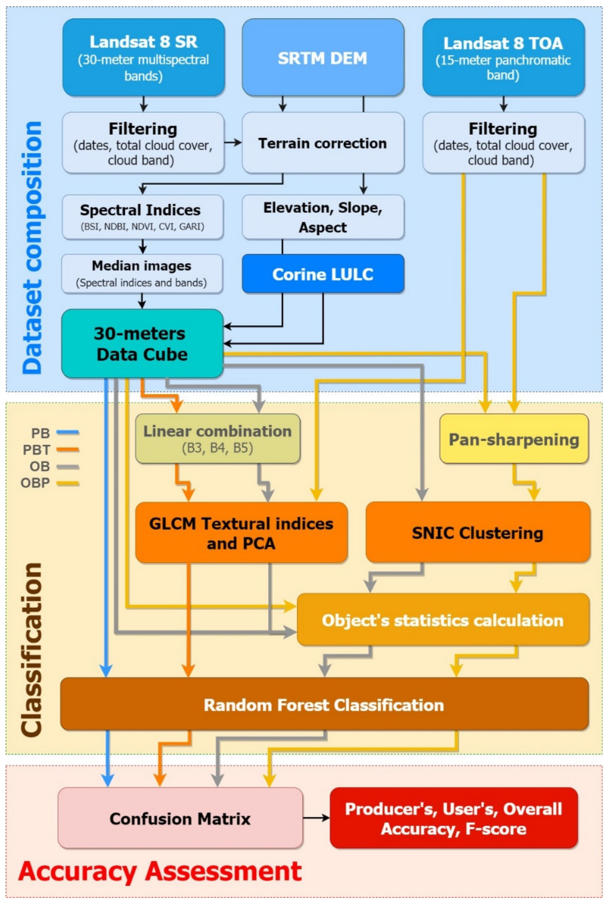
The following figures also clearly shows the accuracy of OBP is the biggest among all accuracy assessment metrics, and the error of OBP is the minimum among all approaches.
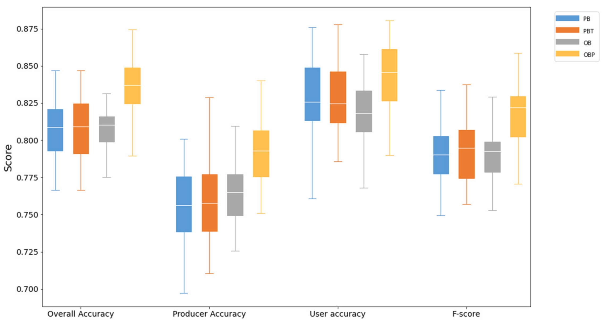
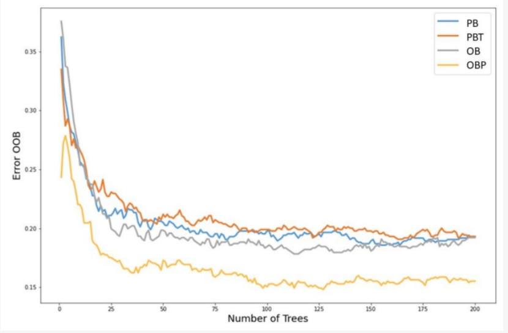
7.2.2 Case2: Trends in Remote Sensing Accuracy Assessment Approaches in the Context of Natural Resources
Several evaluation metrics were illustrated in the previous summary, but applications of these metrics are limited. Therefore, this part tries to provide more information about the selection of accuracy assessment approaches. Morales-Barquero et al. (2019a) examined all the papers (282) including accuracy assessment terms in the Web of Science from 1998 to 2017, which aimed to provide a guideline to all accuracy assessment approaches for remote sensing researches. The following figures show there are no standardized accuracy assessment, and most common accuracy assessment approaches are OA and UA. Although Kappa has some limitations, it is still reported in many papers. Overall, the error matrix is the most common and useful in classification, and I think it will be one of great metric in the classification. Also, I think the selection of accuracy assessment approaches are various depending on the research purposes.
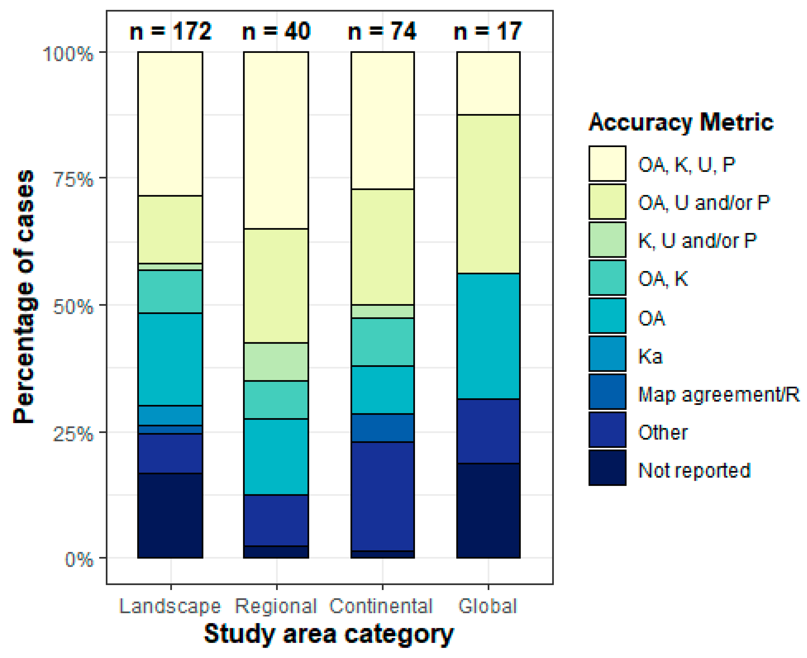
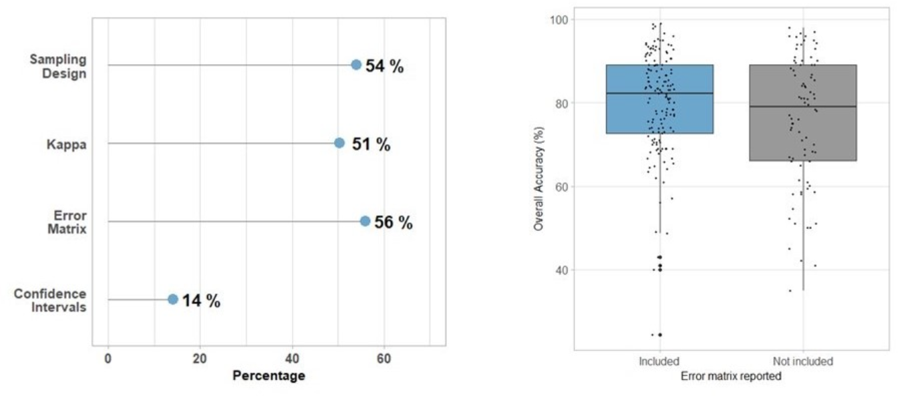
The another interesting finding in their paper is the relationship between OA and validation unit. When the number of units for polygon (group of pixels) increases, the OA also increases (Morales-Barquero et al. (2019b)). So when we consider to select validation data, we can use polygon.
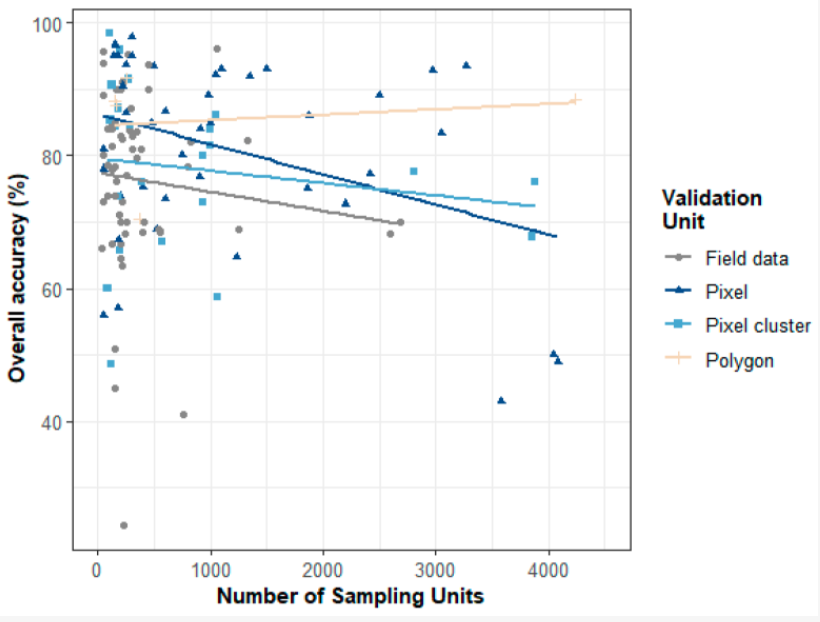
7.3 Reflection
Cross-validation is a common and important technique that can help me to evaluate my model, avoid overfitting, and optimize hyperparameters in my model training work. Similarly, spatial cross-validation has not only previous benefits but also considers spatial autocorrelation. In this method, it makes the training and testing datasets are spatially independent. This will improve the accuracy of the spatial prediection model. Therefore, I think spatial cross validation will be a useful tool in evaluation of my future spatial prediction model.
This week’s summary covered many accuracy assessment methods, but I think the most useful one is confusion matrix in the classification. In the matrix, I can directly see the performance of my model in each category. For example, I can find that my model probably classified some vegetation as forest because they are similar or my model classified all water correctly. This will provide some ideas about where my model did well or not. I can adjust my model based on the confusion matrix. In addition, I can consider to improve my UA, PA or OA depending on various purposes. For example, if I do some analysis about the glacier, I probably don’t care about the accuracy of vegetation in my model.
Like the first case study in the application, it compares the performance of pixed-based and object-based approaches, and they found object-based approach has higher accuracy. In my future work, I think I also need to explore different approaches, like object-based and subpixel. This will give me more information about how to justify them, and select the suitable approach. The second case shows the accuracy assessment methods are varied in many papers. Although some of the studys still use Kappa, I think Kappa is not the best accuracy assessment compared to OA, UA, and PA in the classification problems. In my opinion, confusion matrix is the first evaluation method when I do classification in machine learning.
In the practical, the subpixel analysis requires endmembers to compute the percent of each pixel, and I used mean of selected ROI as the values of endmembers. In this process, I only select one big polygon for each category, and this may reduce the accuracy of my classification. Also, In my classification, I divide urban into two categories: high-urban and low-urban, I found that low-urban is so diverse, and it’s hard to find the best sample of low urban on the map. I think I need to explore more about how to better classify low-urban and high-urban. One of my idea about this probably is that I can combine some GIS data with helping me distinguish them. In addition, the superpixel uses SNIC algorithms based on color and spatial proximity, which is very interesting to me. I found this algorithm also can be applied to scene analysis, which may be useful for my dissertation topic. My dissertation is to analyze the urban green space using deep learning based on street view imagery.